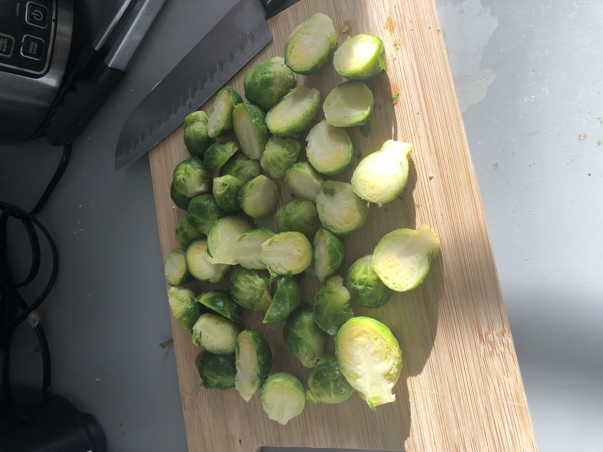

Roasted Brussels Sprouts
These roasted brussels sprouts take about an hour to make, start to finish.
Don't let that discourage you though, because at least 3/4 of that time is
unattended. Your patience will be rewarded with sprouts that are dark and
crispy on the outside and pleasantly tender on the inside.
This recipie also serves as a template for roasting any hearty winter vegetable.
The process will be largely the same, and you can use the same oven temperature,
but cook times will have to be changed depending on the vegetable.
Ingredients
- Brussels Sprouts: (if using frozen, thaw them first)
- Cooking Oil: (I prefer olive oil for this)
- Seasonings: Salt (or substitute), pepper. Feel free to add a sprinkle of whatever seasonings you like
Directions
- Preheat oven to 450 F
- Pour about a tablespoon of oil onto a baking sheet
- Slice each sprout in half so that each half contains part of the root.
The root is what holds the sprout together, so if you cut a sprout so that the root is only on one side,
the other will fall apart.
- Place the sprouts cut-side down onto the baking sheet, and stir them around to coat their bottoms in the
oil and seasonings. We want them cut-side down so that we maximize the surface area in contact with the pan,
and therefore maximize browning.
- Place the baking sheet in the oven, and set a timer for 40 minutes. If they're not quite brown enough yet,
leave them in the oven, and check on them frequently until they're as dark as you want them. I like mine very dark;
brussels sprouts can take on a lot of color before they start to taste burnt, so taste as you go.
- Once browned to your liking, remove them from the oven and serve them on a plate or in a bowl, and top them with your
sauce of choice. I often make a simple balsalmic vinegarette or tahini-based sauce, but the choice is yours. Be creative!
Blank slate recipies like these are endlessly customizable, so they never really get old.
- Enjoy!
